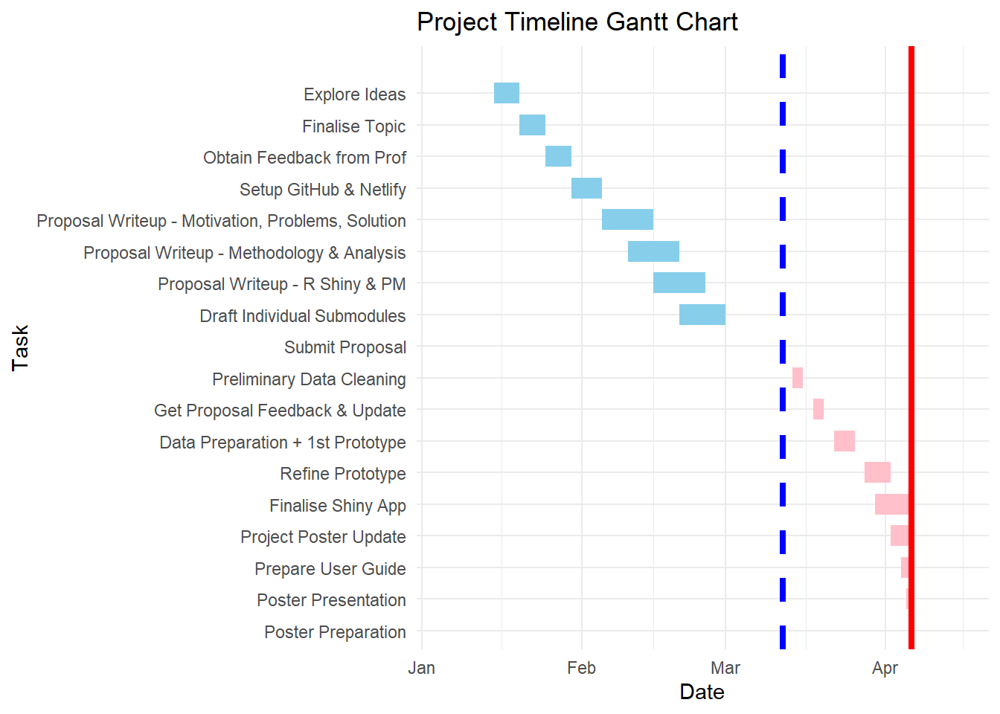

ISSS608 Group 14 Meeting Minutes 1
1. ISSS608 Group 14 Meeting Minutes
Project Meeting 1: Project Proposal, Project Methodology, Project Timeline
Date: 05/03/2025
Time: 8.00pm – 10.00pm
In Attendance: Andrea YEO Si Han, Dhreeti SHAH, OU Yi Ming
Minutes Taker: Andrea YEO Si Han
2. Agenda Items
Agenda Item 1: Decision on Project Topic
Agenda Item 2: Discussion on Project Methodology/ Overall Approach
Agenda Item 3: Consensus of the Project Timeline
Agenda Item 4: Any Other Matters/ Follow-up Action
3. Agenda Item 1: Decision on Project Topic
Prior to the first meeting, the team had an informal discussion on 01 March 2025 and agreed to explore topics that provide ample variables (both continuous and categorical) to allow for different visualization techniques and analytical methods.
3.1 Discussion on Proposed Topics:
3.1.1 Evaluation of the financial transactions and fraud detection dataset
Dhreeti suggested analyzing financial transactions and fraud detection using a dataset available on Kaggle. She noted that this dataset is well-suited for Exploratory Data Analysis (EDA) and predictive modeling techniques such as classification and anomaly detection. The dataset included various transaction types, timestamps, and fraud indicators, making it a compelling choice for understanding financial fraud patterns.
Good:
Contained diverse transaction types and timestamps.
Suitable for predictive modeling and anomaly detection.
Could provide insights into fraud trends and detection patterns.
Bad:
Data credibility concerns due to the confidential nature of financial transactions.
Lack of transparency in data sourcing and potential synthetic data issues.
Limited time period (Total: 8 years), reducing the ability to analyze long-term trends.
Narrow scope for exploratory data analysis beyond anomaly detection. There may or may not be any anomaly in the dataset.
3.1.2 Evaluation of the World Happiness Report (WHR) dataset
Andrea introduced the idea of analyzing global happiness trends using data from the World Happiness Report (WHR). The dataset includes economic, social, and governance-related factors that contribute to national well-being. This dataset spans from 2008 to 2014 and is released as an annual report. It provides an opportunity to explore how happiness levels change year over year for different countries and identify patterns over time. By examining key contributing factors such as GDP per capita, social support, life expectancy, freedom, generosity, and perceptions of corruption, this dataset allows for an in-depth analysis of what influences a country’s happiness score. It will be particularly interesting to visualize trends across different regions and observe how certain global or national events impact overall happiness.
Good:
Covers at least 16 years of data (2008-2024), enabling trend analysis.
Provides a mix of economic, social, and governance factors, allowing for a multi-dimensional exploration of happiness.
Open-source and publicly available, ensuring data credibility.
Allows for geographic and time-series visualizations.
Potential for interactive dashboards to explore how different factors influence happiness across countries and over time.
Bad:
Some variables may have missing values, requiring data cleaning and imputation.
Limited number of happiness-related factors (total of 8), which may restrict deeper analysis on additional influences beyond those included.
3.1.3 Evaluation of the Tourism dataset
Yi Ming suggested analyzing tourism trends using a dataset from the Singapore Department of Statistics (DOS). This dataset contains data on visitor arrivals on a month-to-month basis across countries, hotel occupancy rates, and available room nights. It is suited for seasonal forecasting, trend analysis, and geographic visualization, making it a strong candidate for exploring tourism behavior and economic impact.
Good:
Provides structured data on international visitor arrivals, hotel occupancy, and tourism trends over time.
Suitable for seasonal trend analysis and forecasting.
Allows for geographic and time-series visualizations.
Bad:
Primarily focused on tourism volume without deeper insights into traveler behavior and spending.
Extensive existing research on tourism spending, making the analysis less original.
3.1.4 Final Project Selection and Key Areas of Exploration
After considering the different proposed ideas, the team narrowed the options down to two: Tourism Dataset and World Happiness Report (WHR) Dataset. Ultimately, the team unanimously decided on the World Happiness Report (WHR) Analysis due to its novelty and the opportunity to explore and apply the various data visualization techniques learned in class effectively. Using this dataset, the group aims to develop an interactive visual analytics application using Shiny that will allow users to explore happiness trends in a comprehensive and dynamic manner.
Key Areas of Exploration:
Impact of Various Factors on Happiness: Analyze how economic, social, and governance-related factors contribute to happiness across different countries and regions.
Temporal Trends in Happiness: Examine how happiness levels have changed over time from 2008 to 2024 and identify key global events that may have influenced these changes.
Significant Predictors of Happiness: Determine which variables have the strongest impact on a country’s happiness score and explore regional differences in their influence.
4. Agenda Item 2: Discussion on Project Methodology
4.1 Proposed Methodology - Broad overall project approach
The team discussed the methodology for conducting the World Happiness Report Analysis, focusing on a structured approach that integrates data preparation, exploratory data analysis, confirmatory analysis, and visualization techniques.
4.1.1 Data preparation
Import and clean the dataset by handling missing values, normalizing data, and ensuring consistency in variable formats.
Remove redundant or highly correlated variables to avoid overfitting in statistical analysis.
Encode categorical variables (if needed) for analytical consistency.
Transform time-series data to facilitate trend analysis.
4.1.2 Exploratory Data Analysis (EDA) via Data Visualization Methods
The goal of EDA is to understand variable distributions, relationships, and trends across different regions and time periods. The team identified key visualization techniques, including:
Time-series analysis:
Line charts & bar plots to show how happiness scores evolve over time per country/region.
Stacked area charts to compare happiness trends across multiple countries.
Geospatial visualization:
Choropleth maps to display global happiness levels by country.
Heatmaps for regional variations in specific happiness factors (e.g., social support, GDP, governance).
Correlation and distribution analysis:
Bubble plots & scatter plots to analyze relationships between happiness scores and key factors (e.g., GDP per capita, freedom).
Violin & box plots to compare happiness score distributions across economic classifications.
4.1.3 Confirmatory Data Analysis (CDA) via Statistical Methods**
To validate hypotheses and measure the impact of various factors on happiness, statistical methods will be applied:
Correlation analysis:
Pearson/Spearman correlation tests to determine the strength of relationships between happiness and key factors.
Network correlation plots to visualize interdependencies among happiness variables.
Regression modeling:
Multiple Linear Regression (MLR) to quantify how economic, social, and governance factors predict happiness.
Feature importance analysis using Random Forest or SHAP values to identify the most influential predictors.
Comparative analysis:
ANOVA (One-Way and Two-Way) tests to assess happiness differences across income groups, regions, or governance levels.
T-tests & Wilcoxon tests for pairwise country comparisons of happiness scores over time.
4.1.4 Visualization & Dashboard Development
The final step involves integrating Shiny to develop an interactive web-based visualization tool that:
Allows users to explore happiness trends by selecting regions, time periods, and key influencing factors.
Provides real-time filtering and comparison tools for analyzing multiple countries side-by-side.
Integrates predictive modeling outputs to showcase which factors most significantly affect happiness scores.
5. Agenda Item 3: Consensus on the Project Timeline
The team agreed on the broad task and tenative project timeline set out in the Gantt Chart below:
- Blue line: Project proposal due date
- Red line: Project final due date
- Blue blocks: Completed
- Pink blocks: Yet to be completed
6. Agenda Item 4: Any Other Matters/ Follow-up Action
With no further matters to discuss, the meeting ended at 10:00 PM.
Follow-up Actions:
Set up a group GitHub repository to centralize code and ensure all team members have access.
Establish a Git branching strategy (e.g., feature branches) to prevent merge conflicts when working on the same codebase.
Deploy an early version of the project on Netlify to track progress and share updates.
Schedule bi-weekly check-in meetings to monitor progress, discuss challenges, and align on next steps.
Storyboard brainstorming for the Shiny application: Outline potential tabs for the web application.
Meeting Adjourned.